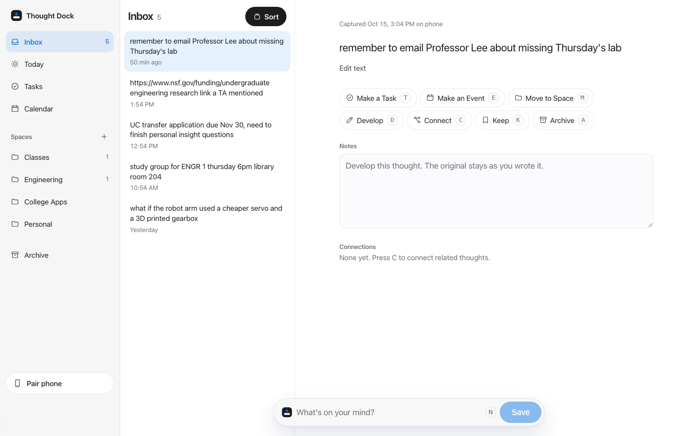

Today's captures
Type it, say it, or snap a photo. Voice notes show a live transcript. No folders, tags, or dates.

A small model we trained suggests what it is. You decide.
Pair with a QR code. No account.
Keyboard for everything.
Light and dark. Reduced motion.
Capture now. Organize later.
Made by Luke, Nikhilesh and Maryam for ENGR 1.